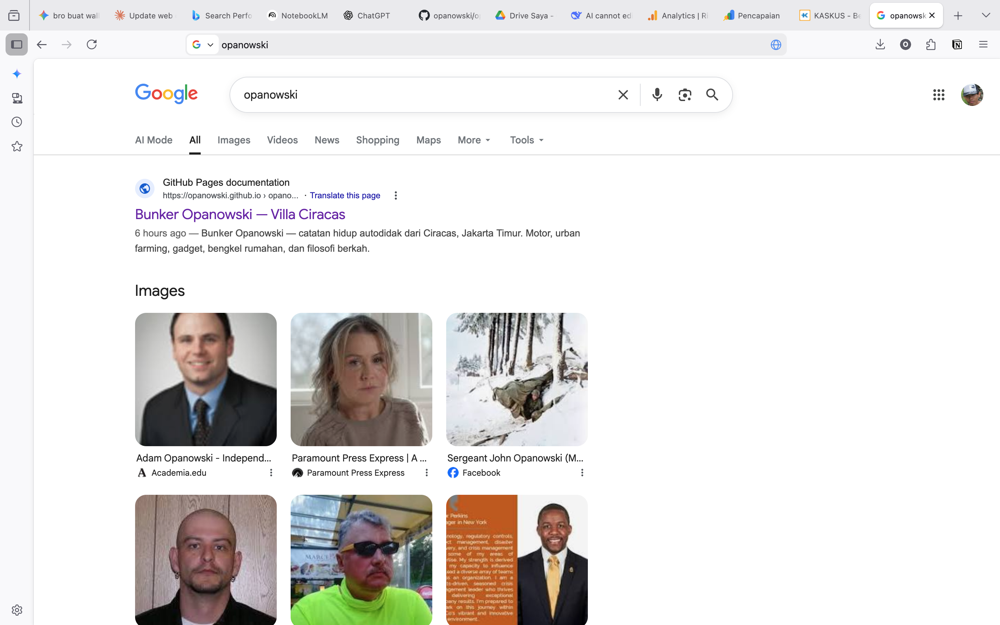
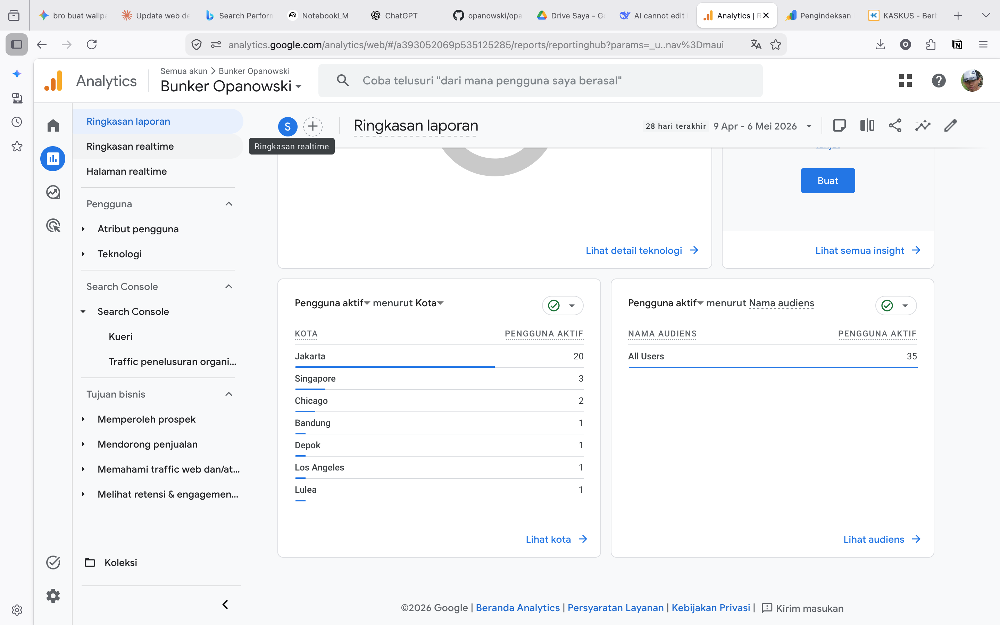

Setelah beberapa minggu fokus beresin struktur Bunker Opanowski di GitHub Pages, akhirnya hari ini gue punya waktu buat bongkar dapur. Gue coba intip Google Analytics sama Search Console buat lihat sejauh mana sih suara dari Villa Ciracas ini terdengar.
Hasilnya? Jujur, di luar ekspektasi gue.

"Ini... serius? Data beneran ngomong gini? Gue buka dua kali buat mastiin bukan salah baca."
01 — Validasi Google: Nama Gue Udah "Resmi"
Hal pertama yang bikin gue puas hari ini adalah pas ngetik nama "Opanowski" di kolom pencarian Google. Gak pake lama, web Bunker kita langsung nongol di barisan paling atas.
Walaupun masih ada beberapa halaman yang statusnya "Di-crawl – saat ini tidak diindeks", tapi mesin pencari udah mulai ngenalin kalau ada satu tempat di Jakarta Timur yang rajin sharing soal hidup autodidak.

02 — Rekor Engagement: 4 Menit Bukan Waktu yang Singkat
Gue sempet kaget lihat rata-rata waktu interaksi pengunjung. Bukan hitungan detik — tapi menit. Dan bukan 1-2 menit, tapi tembus angka yang cukup bikin gue terdiam sebentar.
per session
Facebook Pro
mampir
Di dunia web sekarang yang orangnya pada pengen serba instan, dapet waktu 4 menit itu berharga banget. Artinya, kalian yang mampir ke sini nggak cuma baca judul terus kabur. Kalian bener-bener ngikutin alur log gue — mungkin sambil ngebayangin gimana rasanya grafting anggur, atau dengerin curhatan gue soal sistem yang kadang "membagongkan".


"4 menit 35 detik bukan angka kecil. Ini bukti kalau niat nulis yang beneran — orang ngerasain bedanya."
03 — Jejak Digital: Sampai ke Luar Negeri
Trafik terbesar emang masih dari Jakarta — halo warga Ciracas! Tapi di data gue, ada bendera yang bikin gue senyum sendiri.
Gue jadi kepikiran, apa perlu gue bikin versi Bahasa Inggris? Ah, nggak usahlah — bahasa tongkrongan gini aja udah cukup global kok. Kalau kontennya otentik, tembok bahasa pun bisa ditembus.

"Dari garasi di Ciracas sampai ke Luleå, Swedia. Gue senyum sendiri lihat data ini. Nggak perlu viral — cukup konsisten."
04 — Sinkronisasi FB Pro: Main Dua Kaki
Gue juga perhatiin kalau interaksi di Facebook Professional gue naik signifikan. Reels yang gue upload di sana jadi pintu masuk (referral) yang paling efektif ke web ini.
Sinkronisasi ini yang bakal terus gue pertajam. Bukan karena ngejar angka — tapi karena ini model yang genuinely works untuk konten otentik kayak Bunker ini.
Kesimpulan & Rencana ke Depan
Bunker Opanowski bukan cuma tempat pamer gadget atau motor. Ini tempat belajar bareng. Gagal grafting? Gue tulis. Berhasil benerin panel listrik? Gue share. Termasuk pengalaman beresin sistem yang validasi hijaunya dipersulit kemarin — itu semua jadi pelajaran mahal.
Data udah bicara kalau kalian betah di sini. Gue janji bakal terus kasih konten yang otentik, presisi (tetep pakai kunci torsi!), dan pastinya bermanfaat buat sesama pegiat DIY.
Salam Oprek dari Ciracas! 🔧
Konten ini bermanfaat? Share ke yang lagi bangun presence digital-nya 🔧
Tanya Jawab — Soal Analytics & SEO Bunker
Pertanyaan yang mungkin muncul soal data dan strategi digital Bunker Opanowski.